Contents
- Cargo ECG
- Acondicionar Señal: Submuestreo Señal para utilizar Filtro Rick Lyons
- Filtro Peine Mr. Rick Lyons
- Aplicar el filtro
- Graficar la señal original y la filtrada en el mismo gráfico
- ECG en Reposo
- ECG en Ejercicio
- ECG Maximo Esfuerzo
- DEnsidad Espectral de Potencia: Periodograma
- Densidad Espectral de Potencia: Metodo de Welch
- Densidad Espectral de Power: ECG estado en Reposo
- Densidad Espectral de Power: ECG estado en inicio Ejercicio/Movimiento
- Densidad Espectral de Power: Max Power
- Conclusion: se obtiene gran atenuacion en 0 y en 50Hz que es donde se encontraban mayores interferencias
- Se redujo la cantidad de muestras de fs=1000Hz a fs=200Hz lo que significa que es posible Medir con un Circuito menos Exigido
- Analisis de Derivadas para conocer Sistole y Diastole
- Primera Derivada
- Segunda Derivada
- Señal ECG(t): Reposo
- Señal ECG(t): Ejercicio/Movimiento
- Señal ECG(t): Max Power
- Conclusion: podemos ver el comienzo de la Sistole y Diastole con los Maximos de la derivada primera
- Ideas:
Cargo ECG
load("ECG.mat") %fs = 1000 %Hz
Acondicionar Señal: Submuestreo Señal para utilizar Filtro Rick Lyons
si tomamos cada 5 muestras, la señal submuestreada queda con Fs = 200Hz
ecg_lead_submestreada = ecg_lead(1:5:end); % Recortamos la cantidad de muestras de la señal
Filtro Peine Mr. Rick Lyons
Fs = 200; D = 16;
B = [-1/D^2, zeros(1,4*D-5), 1, 0, 0, 0, (2/D^2-2), 0, 0, 0, 1, zeros(1,4*D-5), -1/D^2];
A = [1, 0, 0, 0, -2, 0, 0, 0, 1];
freqz(B, A, 1024, 'whole', Fs);
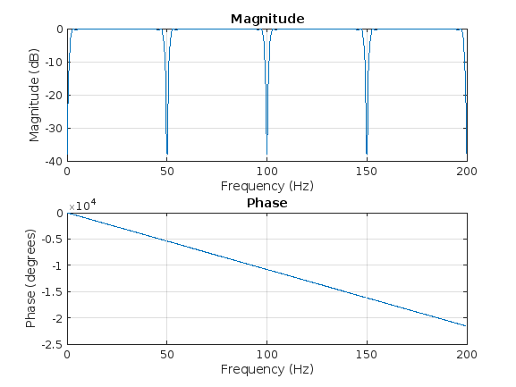 Aplicar el filtro
ecg_filtered = filter(B, A, ecg_lead_submestreada);
Graficar la señal original y la filtrada en el mismo gráfico
figure; plot(ecg_lead_submestreada, 'b'); % Señal original en color azul hold on; % Mantener el gráfico actual plot(ecg_filtered, 'c'); % Señal filtrada en color rojo hold off; % Liberar el gráfico title('Señal ECG original y filtrada'); xlabel('Muestras'); ylabel('Amplitud'); legend('Original', 'Filtrada'); % Conclusion ECG(t): hay un desplazamiento de la señal por la Ganancia en % la Banda de Paso y la acumulacion de Fase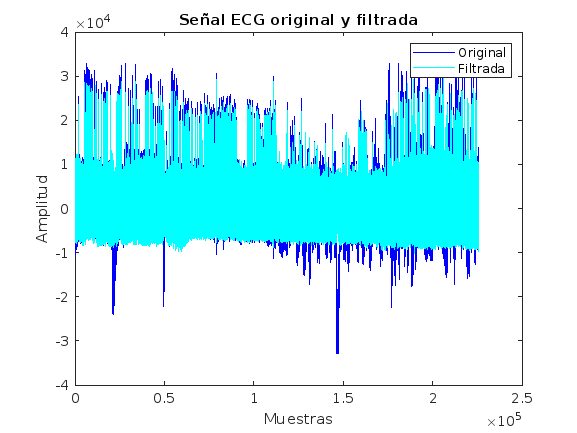
ECG en Reposo
Seccion en Reposo
ecg_reposo = ecg_lead_submestreada(500:1000); ecg_reposo_filtrada = ecg_filtered(500:1000); % Graficar la señal original y la filtrada en el mismo gráfico figure; plot(ecg_reposo, 'b'); % Señal original en color azul hold on; % Mantener el gráfico actual plot(ecg_reposo_filtrada, 'c'); % Señal filtrada en color rojo hold off; % Liberar el gráfico title('Señal ECG en Reposo y Filtrada en Reposo'); xlabel('Muestras'); ylabel('Amplitud'); legend('Original en Reposo', 'Filtrada');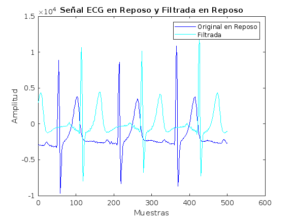
ECG en Ejercicio
Seccion en Reposo
ecg_ejercicio = ecg_lead_submestreada(126400:128000); ecg_ejercicio_filtrada = ecg_filtered(126400:128000); % Graficar la señal original y la filtrada en el mismo gráfico figure; plot(ecg_ejercicio, 'b'); % Señal original en color azul hold on; % Mantener el gráfico actual plot(ecg_ejercicio_filtrada, 'c'); % Señal filtrada en color rojo hold off; % Liberar el gráfico title('Señal ECG original y filtrada'); xlabel('Muestras'); ylabel('Amplitud'); legend('Original', 'Filtrada');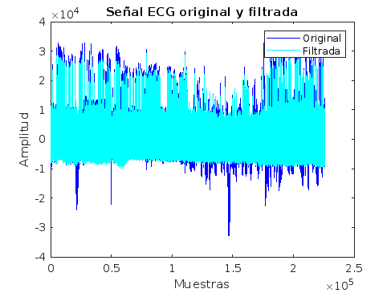 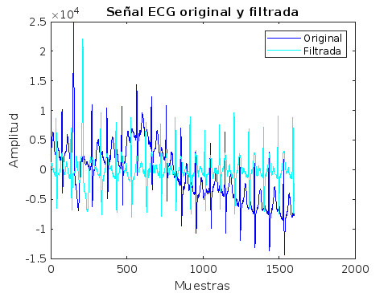
ECG Maximo Esfuerzo
Seccion en Reposo
ecg_pico = ecg_lead_submestreada(200000:209000); ecg_pico_filtrada = ecg_filtered(200000:209000); % Graficar la señal original y la filtrada en el mismo gráfico figure; plot(ecg_pico, 'b'); % Señal original en color azul hold on; % Mantener el gráfico actual plot(ecg_pico_filtrada, 'c'); % Señal filtrada en color rojo hold off; % Liberar el gráfico title('Señal ECG original y filtrada'); xlabel('Muestras'); ylabel('Amplitud'); legend('Original', 'Filtrada');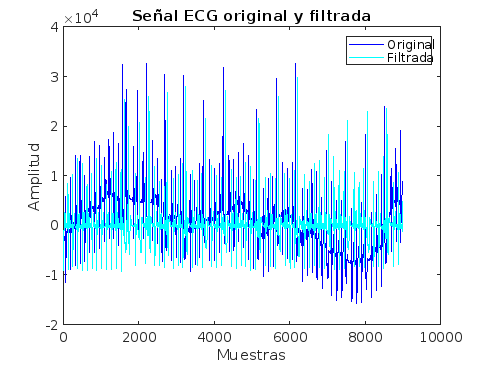
DEnsidad Espectral de Potencia: Periodograma
Calcular la PSD de ecg_pico
[psd_pico,freq_pico] = periodogram(ecg_pico,[],[],Fs); % Graficar la PSD de ecg_pico figure; plot(freq_pico,pow2db(psd_pico)); title('PSD de ecg_pico'); xlabel('Frecuencia (Hz)'); ylabel('Potencia/Frecuencia (dB/Hz)');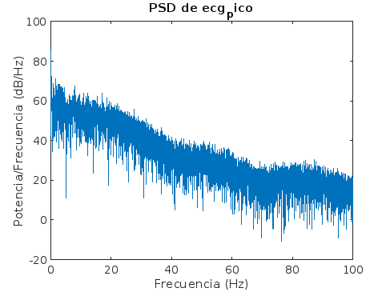
Densidad Espectral de Potencia: Metodo de Welch
Densidad Espectral de Power: ECG estado en Reposo
Calcular la PSD de ecg_pico usando Welch
[psd_reposo,freq_reposo] = pwelch(ecg_reposo,[],[],[],Fs); [psd_reposo_filtrada,freq_reposo_filtrada] = pwelch(ecg_reposo_filtrada,[],[],[],Fs); % Graficar la PSD de ecg_pico figure; plot(freq_reposo,pow2db(psd_reposo), 'b'); % Señal original en color azul hold on; % Mantener el gráfico actual plot(freq_reposo_filtrada,pow2db(psd_reposo_filtrada), 'c'); % Señal filtrada en color celeste hold off; % Liberar el gráfico title('Señal ECG original y filtrada'); xlabel('Muestras'); ylabel('Amplitud'); legend('Original', 'Filtrada');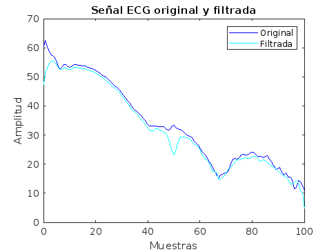
Densidad Espectral de Power: ECG estado en inicio Ejercicio/Movimiento
Calcular la PSD de ecg_pico usando Welch
[psd_ejercicio,freq_ejercicio] = pwelch(ecg_ejercicio,[],[],[],Fs); [psd_ejercicio_filtrada,freq_ejercicio_filtrada] = pwelch(ecg_ejercicio_filtrada,[],[],[],Fs); % Graficar la PSD de ecg_pico figure; plot(freq_ejercicio,pow2db(psd_ejercicio), 'b'); % Señal original en color azul hold on; % Mantener el gráfico actual plot(freq_ejercicio_filtrada,pow2db(psd_ejercicio_filtrada), 'c'); % Señal filtrada en color celeste hold off; % Liberar el gráfico title('Señal ECG original y filtrada'); xlabel('Muestras'); ylabel('Amplitud'); legend('Original', 'Filtrada');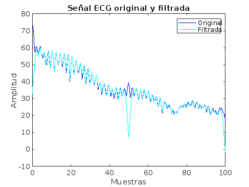
Densidad Espectral de Power: Max Power
% Calcular la PSD de ecg_pico usando Welch [psd_pico,freq_pico] = pwelch(ecg_pico,[],[],[],Fs); [psd_pico_filtrada,freq_pico_filtrada] = pwelch(ecg_pico_filtrada,[],[],[],Fs); % Graficar la PSD de ecg_pico figure; plot(freq_pico,pow2db(psd_pico), 'b'); % Señal original en color azul hold on; % Mantener el gráfico actual plot(freq_pico_filtrada,pow2db(psd_pico_filtrada), 'c'); % Señal filtrada en color celeste hold off; % Liberar el gráfico title('Señal ECG original y filtrada'); xlabel('Muestras'); ylabel('Amplitud'); legend('Original', 'Filtrada');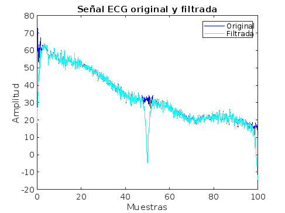
Conclusion: se obtiene gran atenuacion en 0 y en 50Hz que es donde se encontraban mayores interferencias
Se redujo la cantidad de muestras de fs=1000Hz a fs=200Hz lo que significa que es posible Medir con un Circuito menos Exigido
Analisis de Derivadas para conocer Sistole y Diastole
Primera Derivada
ecg_reposo_filtrada_primera_derivada = diff(ecg_reposo_filtrada); ecg_ejercicio_filtrada_primera_derivada = diff(ecg_ejercicio_filtrada); ecg_pico_filtrada_primera_derivada = diff(ecg_pico_filtrada);
Segunda Derivada
ecg_reposo_filtrada_segunda_derivada = diff(ecg_reposo_filtrada, 2); ecg_ejercicio_filtrada_segunda_derivada = diff(ecg_ejercicio_filtrada, 2); ecg_pico_filtrada_segunda_derivada = diff(ecg_pico_filtrada, 2);
Señal ECG(t): Reposo
figure; subplot(3,1,1); plot(ecg_reposo_filtrada); title('ECG en Reposo Filtrada'); xlabel('Muestras'); ylabel('Amplitud'); subplot(3,1,2); plot(ecg_reposo_filtrada_primera_derivada); title('Primera Derivada de ECG en Reposo'); xlabel('Muestras'); ylabel('Amplitud'); subplot(3,1,3); plot(ecg_reposo_filtrada_segunda_derivada); title('Segunda Derivada de ECG en Reposo'); xlabel('Muestras'); ylabel('Amplitud');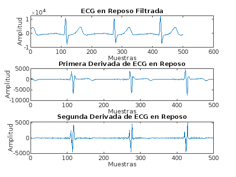
Señal ECG(t): Ejercicio/Movimiento
figure; subplot(3,1,1); plot(ecg_ejercicio_filtrada); title('ECG en Reposo Filtrada'); xlabel('Muestras'); ylabel('Amplitud'); subplot(3,1,2); plot(ecg_ejercicio_filtrada_primera_derivada); title('Primera Derivada de ECG en Reposo'); xlabel('Muestras'); ylabel('Amplitud'); subplot(3,1,3); plot(ecg_ejercicio_filtrada_segunda_derivada); title('Segunda Derivada de ECG en Reposo'); xlabel('Muestras'); ylabel('Amplitud');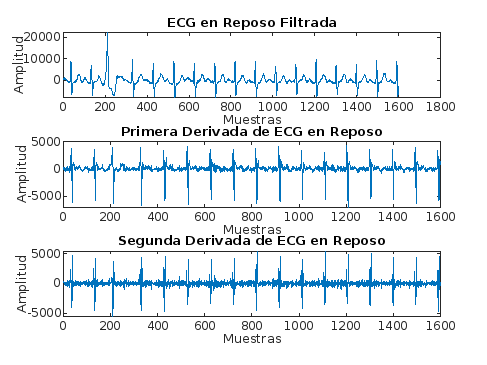
Señal ECG(t): Max Power
figure; subplot(3,1,1); plot(ecg_pico_filtrada(1:1000)); title('ECG en Reposo Filtrada'); xlabel('Muestras'); ylabel('Amplitud'); subplot(3,1,2); plot(ecg_pico_filtrada_primera_derivada(1:1000)); title('Primera Derivada de ECG en Reposo'); xlabel('Muestras'); ylabel('Amplitud'); subplot(3,1,3); plot(ecg_pico_filtrada_segunda_derivada(1:1000)); title('Segunda Derivada de ECG en Reposo'); xlabel('Muestras'); ylabel('Amplitud');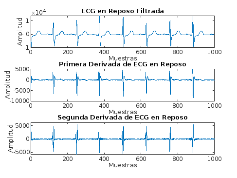
Conclusion: podemos ver el comienzo de la Sistole y Diastole con los Maximos de la derivada primera
Ideas:
.filtrar señal de ECG para analisar ruido de baja frecuencia y alta frecuencia, de esta manera poder conocer el grado de los filtros analogicos que se agregarian antes del ADC